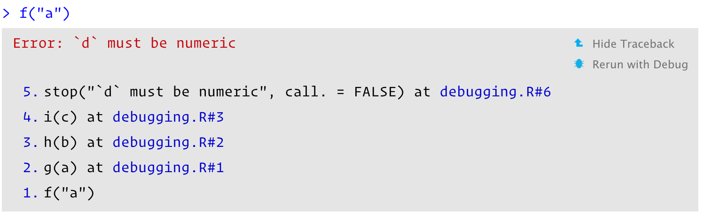

f <- function(a) g(a)
g <- function(b) h(b)
h <- function(c) i(c)
i <- function(d) {
if (!is.numeric(d)) {
stop("`d` must be numeric", call. = FALSE)
}
d + 10
}
f("a")
#> Error: `d` must be numeric22 Debugging
Introduction
当R代码运行时抛出错误，你会怎样处理？你会使用什么工具来检测和解决？本章就上面两点，先介绍通用的错误处理方法，然后介绍一些特殊的工具。
注意：在编写新函数时，你不应该使用这些工具。如果你发现自己经常在新代码中使用这些工具，请重新考虑你的方法。与其试图一次性编写一个大函数，不如交互式地分段编写。如果从小处着手，你可以快速确定为什么某些事情不能正常工作，而不需要复杂的调试工具。
Outline
- 22.2节：介绍找到和解决bug的通用策略。
- 22.3节：介绍
traceback()，锁定错误的调用栈。 - 22.4节：介绍中断函数执行，并交互探索具体发生的事件。
- 22.5节：讨论非交互状态下的调试。
- 22.6节：讨论一些偶尔也需要调试的非错误问题。
Overall approach
Tip
Finding your bug is a process of confirming the many things that you believe are true — until you find one which is not true.
—Norm Matloff
找到问题的根本原因总是具有挑战性。大多数bug都很微妙且难以发现，因为如果它们很明显，你一开始就会避开它们。一个好的策略会有所帮助。以下是我发现有用的四步流程概述：
-
Google!
无论何时看到错误消息，都可以先在浏览器上搜索它（现在用AI啦）。如果你幸运的话，你会发现这是一个已知解决方案中常见的错误。在搜索时，通过删除任何与你的问题特定的变量名称或值来提高匹配成功的概率。
可以使用“errorist”和“searcher”包自动执行这个过程，参阅它们的网站以了解更多详细信息。
-
Make it repeatable
为了找到错误的根本原因，你需要在考虑和拒绝假设时多次执行代码。为了使迭代尽可能快速，值得进行一些前期投资，使问题既容易又快速地重现。
首先创建一个可重复的示例 (参见 1.7 节)。接下来，通过删除代码和简化数据来使示例最小化。在这个过程中，你可能会发现一些不会触发错误的输入。请记住这些输入：它们将有助于诊断根本原因。
如果你正在使用自动化测试，这也是创建自动化测试用例的好时机。如果你现有的测试覆盖率较低，可以趁机添加一些附近的测试，以确保保留现有的良好行为。这样可以降低创建新 bug 的可能性。
-
Figure out where it is
如果你幸运的话，下一节中的一个工具将帮助你快速识别导致 bug 的代码行。然而，通常情况下，你需要对问题进行更多的思考。采用科学的方法是一个很好的主意。生成假设，设计实验来测试它们，并记录你的结果。这可能看起来是很多工作，但系统的方法最终会节省你的时间。我经常浪费大量时间依靠直觉来解决 bug (“哦，这一定是一个差一错误，所以我就在这里减去 1”), 而实际上我采用系统的方法会更好。
如果这个方法失败了，你可能需要向其他人寻求帮助。如果你遵循了上一步，你就会有一个容易与他人分享的小例子。这会让其他人更容易看到问题，也更有可能帮助你找到解决方案。
-
Fix it and test it
一旦你发现了 bug, 你需要弄清楚如何修复它，并检查修复是否真的有效。同样，有自动化测试非常有用。这不仅有助于确保你确实修复了 bug, 还有助于确保你在过程中没有引入任何新的 bug。在没有自动化测试的情况下，请确保仔细记录正确的输出，并检查之前失败的输入。
Locating errors
一旦你使错误可重复，下一步就是找出它的来源。在这个过程中，最重要的工具是traceback(), 它向你显示导致错误的调用序列 (也称为调用栈，见 7.5 节)。
下面是一个简单的例子。你可以看到 f() 调用 g() 调用 h() 调用 i(), 后者检查其参数是否为数值：
当你在Rstudio中运行f("a")时，你会看到：

错误信息的右侧出现两个选项：“Show Traceback”和“Rerun with Debug”，如果你点击“Show Traceback”，你可以看到：

如果你没有使用Rstudio，你可以使用traceback()来查看这些信息。
traceback()
#> 5: stop("`d` must be numeric", call. = FALSE) at #3
#> 4: i(c) at #1
#> 3: h(b) at #1
#> 2: g(a) at #1
#> 1: f("a")
Note
注意：如果你使用source()加载的函数，调用traceback()后会显示错误的具体未知，filename.r#linenumber。
Lazy evaluation
traceback()的一个缺点是始终线性展示调用栈，如果调用过程包含大量的惰性评估，就会显得混乱。例如，在f()内惰性评估j()产生的调用栈：
j <- function() k()
k <- function() stop("Oops!", call. = FALSE)
f(j())
#> Error: Oops!traceback()
#> 7: stop("Oops!", call. = FALSE) at #1
#> 6: k() at #1
#> 5: j() at #1
#> 4: i(c) at #1
#> 3: h(b) at #1
#> 2: g(a)
#> 1: f(j())可以使用rlang::abort()来替代stop()，使用rlang::last_trace()来替换traceback()。
k <- function() rlang::abort("Oops!")
f(j())
#> rlang::last_trace()
#> <error/rlang_error>
#> Error in `k()`:
#> ! Oops!
#> ---
#> Backtrace:
#> ▆
#> 1. ├─global f(j())
#> 2. │ └─global g(a)
#> 3. │ └─global h(b)
#> 4. │ └─global i(c)
#> 5. └─global j()
#> 6. └─global k()
#> Run rlang::last_trace(drop = FALSE) to see 1 hidden frame.Interactive debugger
对于找到并修复错误，有时错误的位置信息已经足够；但通常需要更多信息，最简单的方法是使用交互式调试器，它允许暂停函数的执行，并交互式地探索其状态。
如果你正在使用RStudio, 进入交互式调试器最简单的方式是通过RStudio的“Rerun with Debug” 工具，它会重新运行创建错误的命令，暂停发生错误的执行。否则，你需要在暂停的地方插入一个browser()调用，然后重新运行该函数。例如，可以在g()中插入一个browser()调用：
g <- function(b) {
browser()
h(b)
}
f(10)
#> Called from: g(a)
#> debug: h(b)
#> [1] 20browser()是一个常规函数，你可以使用if语句包裹它：
g <- function(b) {
if (b < 0) {
browser()
}
h(b)
}browser()会在终端生成Browse[1]>样式的提示，表示你正在browser()启动的环境中交互。如果你在Rstudio中点击“Rerun with Debug”，会在环境栏中显示当前环境中的对象，在traceback栏中显示调用栈。
browser() commands
除了可以运行常规R代码外，browser()提供了一些特殊的命令，可以直接在终端运行它们的缩写或在Rstudio中工具栏：

Next,
n：运行函数下一步. 如果你有一个变量名是n，你需要运行print(n)来展示值。Step into,
 or
or s：功能类似next，但是如果下一步运行的是函数，会跳入到该函数中进行交互。Finish,
 or
or f：结束当前循环或函数。Continue,
c：如果你已经修复了错误状态，并想要检查函数是否正常运行，运行它，会离开交互式调试，继续正常执行函数。Stop,
Q：停止调试，终止函数，然后返回全局工作空间。一旦你确定了问题所在，并且准备好修复它并重新加载代码，就可以使用这个方法。
还有两个稍微不那么有用且在工具栏中不可用的命令：
Enter：重复之前的命令。该功能极易激活，使用
options(browserNLdisabled = TRUE)可以将其关闭。where：打印活动调用的堆栈跟踪 (相当于Rstudio交互式 的traceback) 。
Alternatives
有三种替代browser()的方法：在Rstudio中设置断点、options(error = recover)、debug()。
Breakpoints
在Rstudio中，你可以点击左侧代码行或者使用Shift + F9来设置断点。设置断点相当于你在这行代码中插入了browser()。这样，你可以直观地看到插入的断点，也可以无需在源码中插入browser()来调试。但它有两个小缺点：
有极少的情况下，断点会失效。阅读breakpoint troubleshooting了解更多信息。
目前Rstudio不支持在条件情况中设置断点。
recover()
设置options(error = recover)后，报错时会自动进入交互式调试。设置options(error = NULL)即可恢复默认行为。
options(error = recover)
f("x")
#> Error: `d` must be numericdebug()
另一种方法是调用一个能插入browser()的函数：
debug()插入browser()到函数f的开头，undebug()移除，debugonce()仅在下一次调用函数时触发，再次调用消失。utils::setBreakpoint()与debug()类似，除函数名外，还可以接受行数、文件名找到恰当的函数。
这两个函数都是trace()的特殊情况，它在现有函数中的任意位置插入任意代码。当调试没有源代码的代码时，trace()偶尔会很有用。要从函数中移除“trace”，可以使用untrace()。每个函数只能执行一个“trace”, 但这一个“trace”可以调用多个函数。
Call stack
不幸地是，traceback(), browser() & where, and recover() 产生的调用栈并不一致。下表是对上面f("a")调用栈的总结。
traceback() |
where |
recover() |
rlang functions |
|---|---|---|---|
5: stop("...") |
|||
4: i(c) |
where 1: i(c) |
1: f() |
1. └─global::f(10) |
3: h(b) |
where 2: h(b) |
2: g(a) |
2. └─global::g(a) |
2: g(a) |
where 3: g(a) |
3: h(b) |
3. └─global::h(b) |
1: f("a") |
where 4: f("a") |
4: i("a") |
4. └─global::i("a") |
在RStudio展示的调用顺序与traceback()一致；“rlang”函数产生的调用顺序与recover()一致。
Compiled code
编译代码 (如 C 或 C++)也可以使用交互式调试器 (gdb 或 lldb) 。遗憾的是，这超出了本书的范围，但有一些资源你可能会发现很有用。
Non-interactive debugging
当无法交互式地运行代码时，debug会很困难。典型地如，在远程服务器运行某个流程，或者在交互运行式不会出错。当无法进行交互式探索时，花费时间将问题设置得尽可能小，以便快速迭代会十分重要。例如，
你需要格外关注下面几个常见的问题：
全局环境是否前后不同，是否加载了不同的包，是否有值不同的变量？
是否工作目录不同？
是否
PATH环境变量不同，导致调用外部命令时失败？是否
R_LIBS环境变量不同，导致加载包时失败或版本不一致。
dump.frames()
dump.frames()等价于recover()。它会在工作目录下储存一个last.dump.rda的文件，你可以使用laod("last.dump.rda")在交互终端中加载文件，接着使用debugger()进入交互环境中进行debug。
# In batch R process ----
dump_and_quit <- function() {
# Save debugging info to file last.dump.rda
dump.frames(to.file = TRUE)
# Quit R with error status
q(status = 1)
}
options(error = dump_and_quit)
# In a later interactive session ----
load("last.dump.rda")
debugger()Print debugging
如果dump.frames()不起作用，另一个策略是使用print debugging——在代码中插入一些print来标记代码位置，进而锁定出错的范围。这种方法低效且原始，但往往会有效果。
print debugging对于编译的代码也特别有用，因为编译器经常会修改代码，以至于即使在交互式调试器中，也无法找出根本问题。
RMarkdown
在RMarkdown文件中进行debug需要一些特殊的工具。首先你需要使用命令行rmarkdown::render("path/to/file.Rmd")来编译文件，这会在当前终端中运行RMarkdown中的代码，使得debug容易些。如果这样做没有产生错误，那么你要检查你得环境，因为肯定不一致。
如果问题依然存在，你需要使用上面的交互式debug技巧。但无论何种方法，你都需要添加额外的步骤：在错误设置中添加sink()。重新设置sink()会移除knitr的默认”sink”设置，能够确保日志在终端中输出。例如，在RMarkdown中使用recover()：
这种设置会生成“no sink to remove”的警告信息，你可以完全忽略它。
如果你只是想生成调用栈，最简单的方式是使用rlang::trace_back()，并对rlang_trace_top_env设置。它会确保只会返回RMarkdown中代码的调用栈，而不是RMarkdown和knitr的所有调用栈。
options(rlang_trace_top_env = rlang::current_env())
options(error = function() {
sink()
print(rlang::trace_back(bottom = sys.frame(-1)), simplify = "none")
})Non-error failures
除了抛出错误之外，还有其他方式导致函数失败：
函数可能会产生意外的警告。追踪警告最简单的方法是
options(warn = 2)将其转换为错误，并使用调用栈，例如doWithOneRestart()、withOneRestart()和常规调试工具。当这样做时，你会看到一些额外的restarts()和.signalSimpleWarning()调用。忽略这些：它们是用于将警告转换为错误的内部函数。一个函数可能永远不会返回。这特别难以自动调试，但有时终止函数并查看
traceback()会提供一些信息。也可以使用打印调试。最糟糕的情况是，你的代码可能会完全崩溃，使你无法交互式地调试代码。这表明编译的(C 或 C++)代码中存在bug。
如果是你的编译代码出错，你可以阅读22.4节中的链接，自行debug。如果错误来自base R或某个R包，你需要联系相关管理员进行维护。